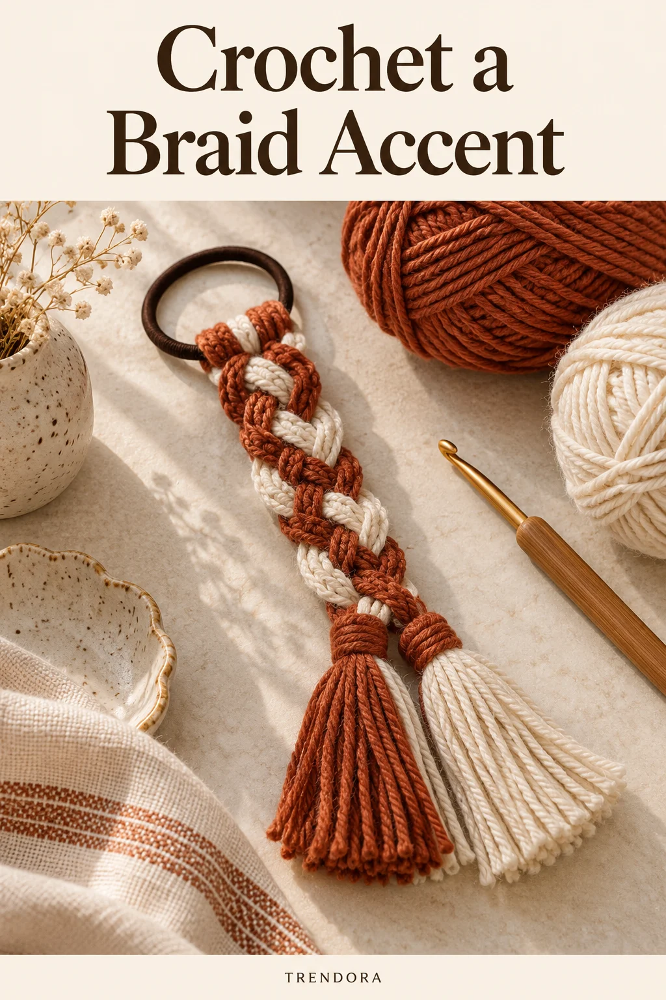
Crochet a Braid Accent
Crochet a Braid Accent. Make a lightweight crochet tassel braid accent with simple caps, cotton cords and comfortable attachment tips inspired by Punjabi parandi styling. Read the full original guide on Folvella.
Three distinct vertical designs for each of 16 original guides. Download a JPG, copy the description and use the linked article as your destination. “Save to Pinterest” opens Pinterest's own creation page for you to review.
Prepared October 4, 2026. These assets have not been posted to your Pinterest account. Images are original AI-generated illustrations.
48 Pins across 16 guides

Crochet a Braid Accent. Make a lightweight crochet tassel braid accent with simple caps, cotton cords and comfortable attachment tips inspired by Punjabi parandi styling. Read the full original guide on Folvella.
Colorful Parandi Ideas. Make a lightweight crochet tassel braid accent with simple caps, cotton cords and comfortable attachment tips inspired by Punjabi parandi styling. Read the full original guide on Folvella.
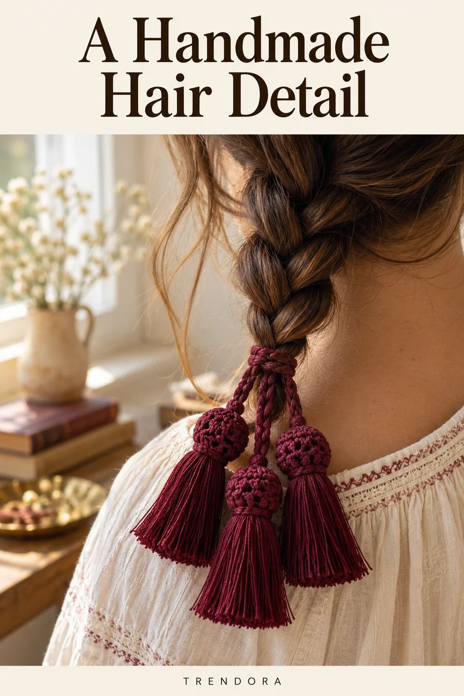
A Handmade Hair Detail. Make a lightweight crochet tassel braid accent with simple caps, cotton cords and comfortable attachment tips inspired by Punjabi parandi styling. Read the full original guide on Folvella.
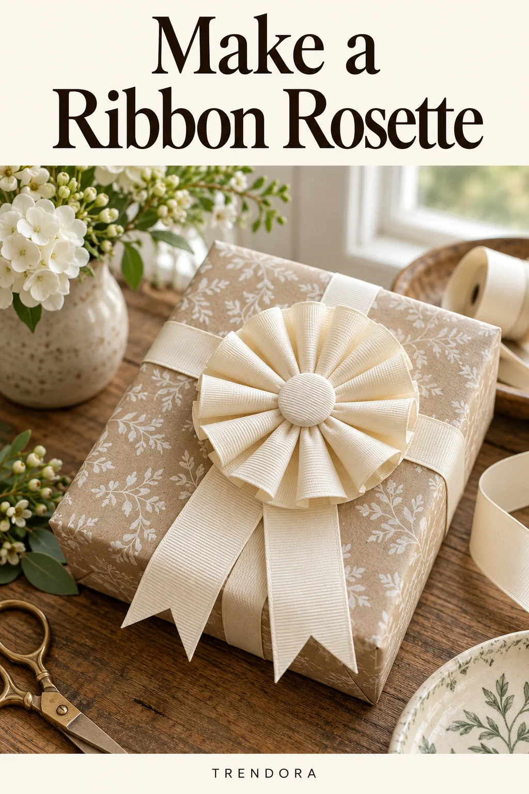
Make a Ribbon Rosette. Fold a simple ribbon rosette with pleats, a card backing and two tails, then use it for birthday keepsakes, gift wrap or party place settings. Read the full original guide on Folvella.
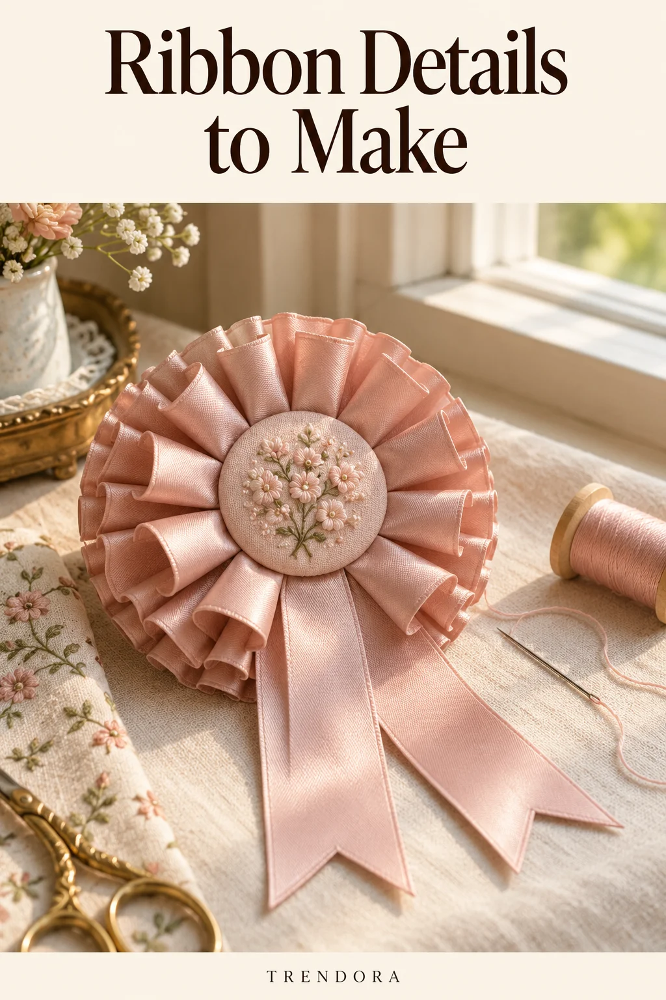
Ribbon Details to Make. Fold a simple ribbon rosette with pleats, a card backing and two tails, then use it for birthday keepsakes, gift wrap or party place settings. Read the full original guide on Folvella.
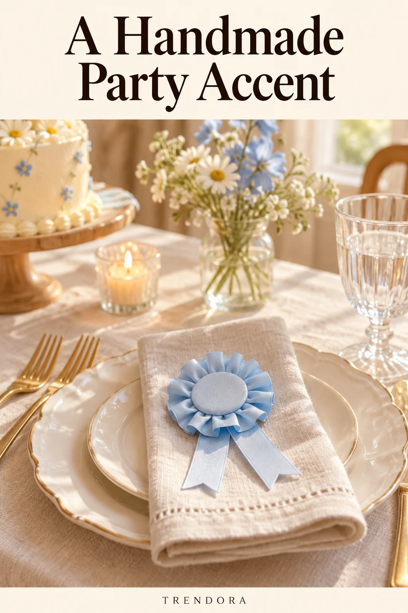
A Handmade Party Accent. Fold a simple ribbon rosette with pleats, a card backing and two tails, then use it for birthday keepsakes, gift wrap or party place settings. Read the full original guide on Folvella.
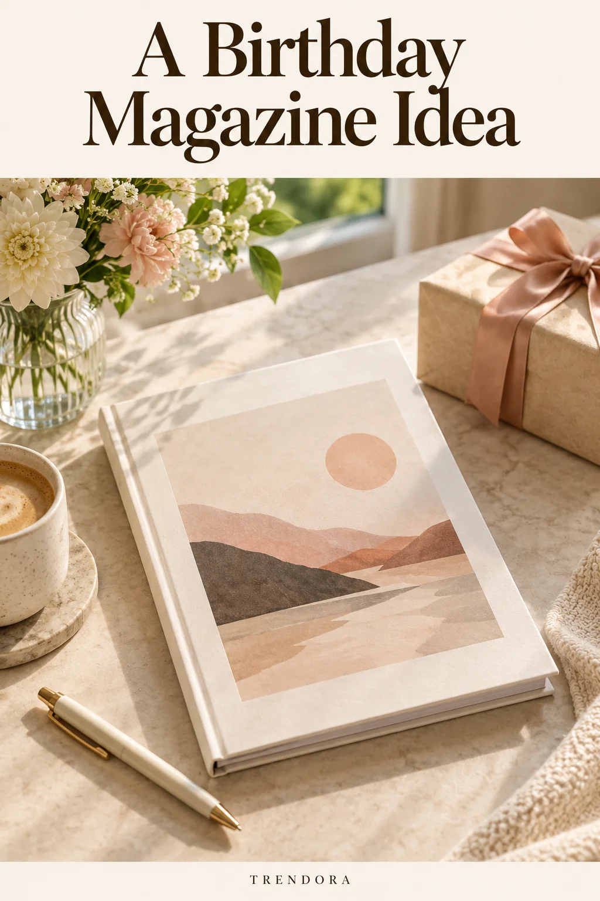
A Birthday Magazine Idea. Plan an eight-page birthday magazine with cover ideas, a memory timeline, personal messages and practical layout and print-checking tips. Read the full original guide on Folvella.
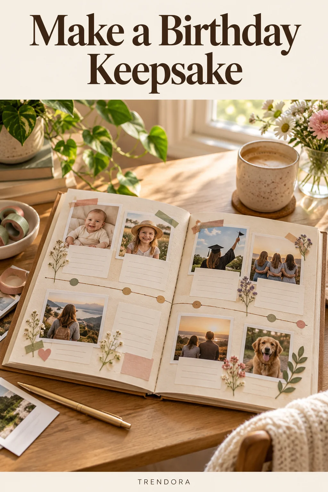
Make a Birthday Keepsake. Plan an eight-page birthday magazine with cover ideas, a memory timeline, personal messages and practical layout and print-checking tips. Read the full original guide on Folvella.
Pages Filled With Memories. Plan an eight-page birthday magazine with cover ideas, a memory timeline, personal messages and practical layout and print-checking tips. Read the full original guide on Folvella.
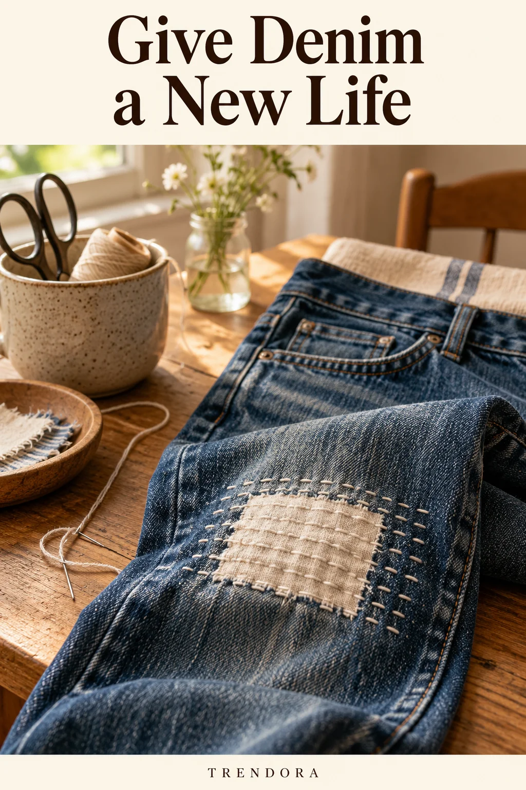
Give Denim a New Life. Repair worn denim with a backing patch and simple sashiko-inspired running stitches, with beginner advice on spacing, tension and finishing. Read the full original guide on Folvella.
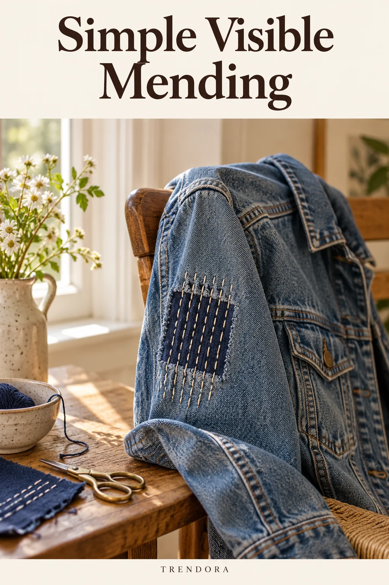
Simple Visible Mending. Repair worn denim with a backing patch and simple sashiko-inspired running stitches, with beginner advice on spacing, tension and finishing. Read the full original guide on Folvella.
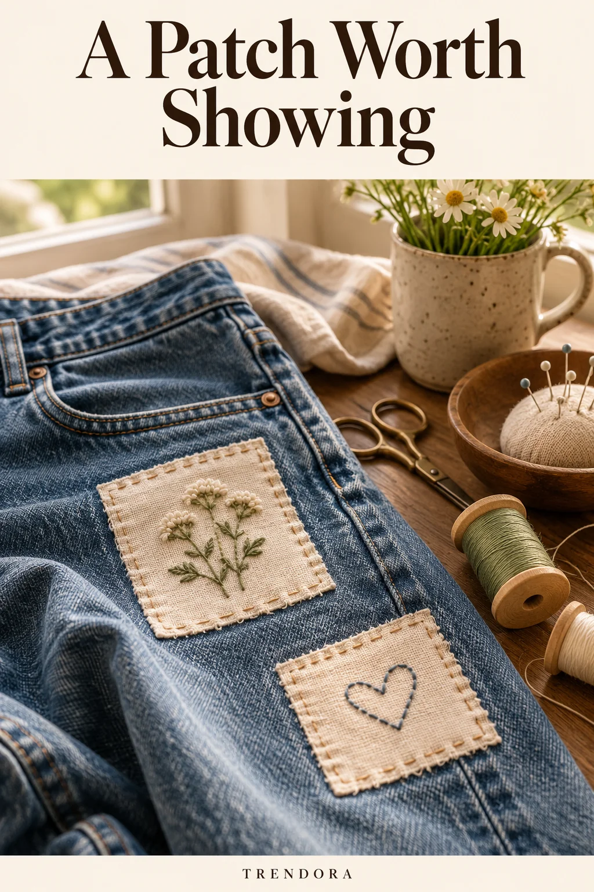
A Patch Worth Showing. Repair worn denim with a backing patch and simple sashiko-inspired running stitches, with beginner advice on spacing, tension and finishing. Read the full original guide on Folvella.
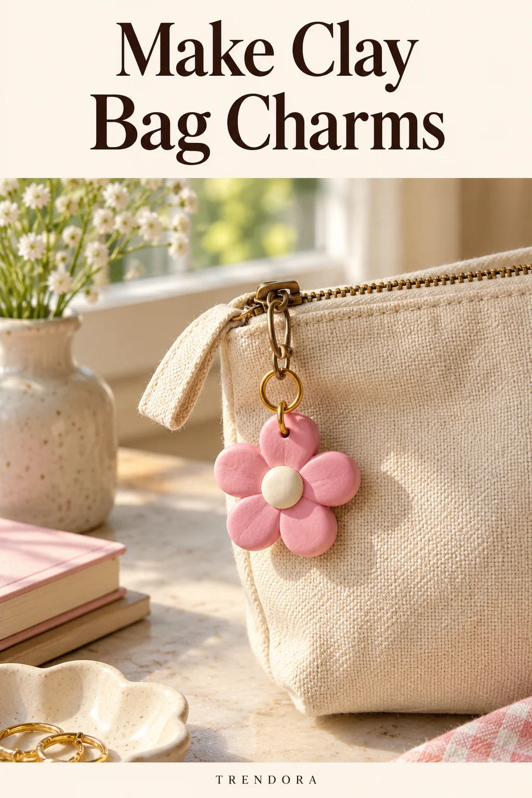
Make Clay Bag Charms. Make lightweight polymer clay bag charms with simple shapes, secure attachment points and curing instructions matched to your clay brand. Read the full original guide on Folvella.
Tiny Charms Big Personality. Make lightweight polymer clay bag charms with simple shapes, secure attachment points and curing instructions matched to your clay brand. Read the full original guide on Folvella.
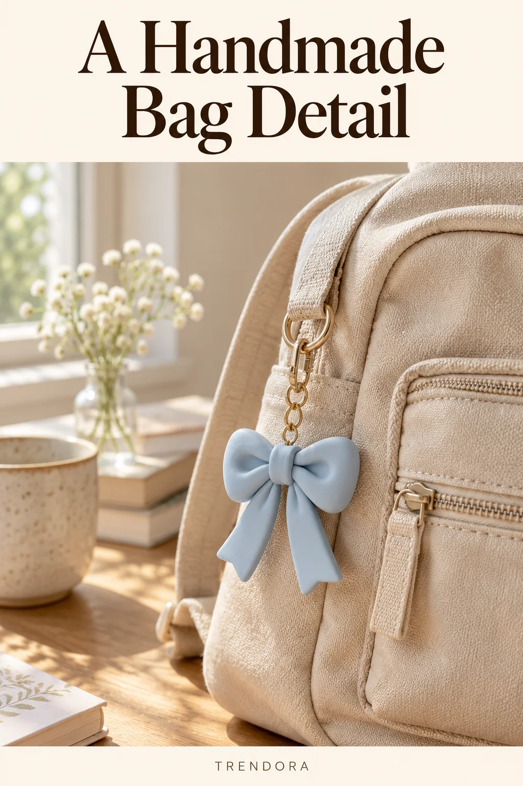
A Handmade Bag Detail. Make lightweight polymer clay bag charms with simple shapes, secure attachment points and curing instructions matched to your clay brand. Read the full original guide on Folvella.
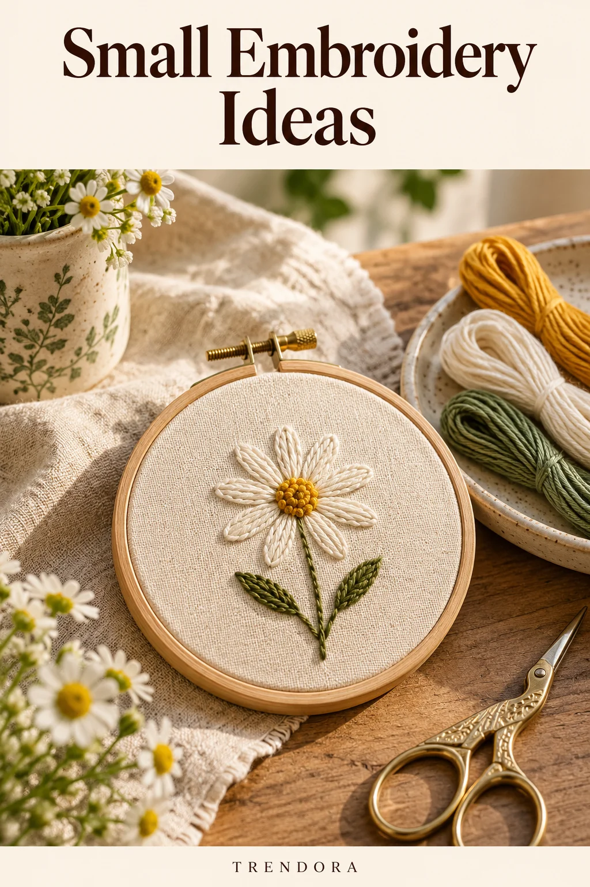
Small Embroidery Ideas. Practice six small hand embroidery motifs with easy stitches, floss guidance and finishing ideas for a hoop, pouch or fabric patch. Read the full original guide on Folvella.
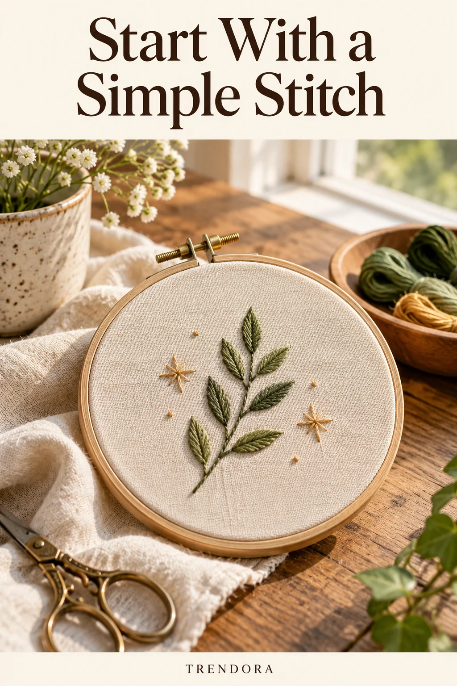
Start With a Simple Stitch. Practice six small hand embroidery motifs with easy stitches, floss guidance and finishing ideas for a hoop, pouch or fabric patch. Read the full original guide on Folvella.
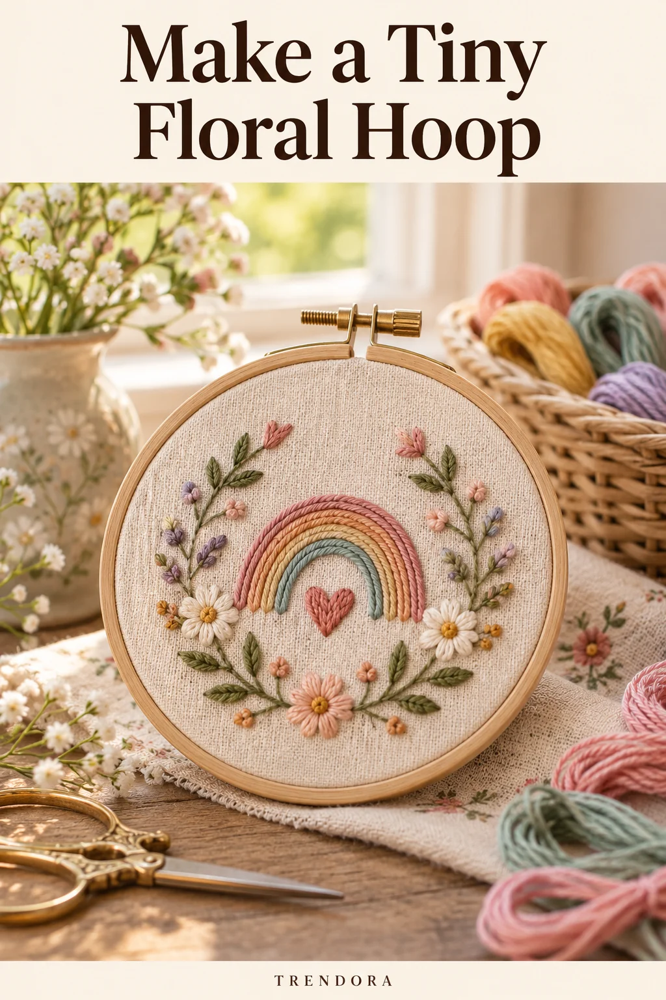
Make a Tiny Floral Hoop. Practice six small hand embroidery motifs with easy stitches, floss guidance and finishing ideas for a hoop, pouch or fabric patch. Read the full original guide on Folvella.
Add a Little Sparkle. Add rhinestones to compatible removable headphone covers with light patterns and clear space around vents, controls, hinges and ports. Read the full original guide on Folvella.
Decorate Headphone Covers. Add rhinestones to compatible removable headphone covers with light patterns and clear space around vents, controls, hinges and ports. Read the full original guide on Folvella.
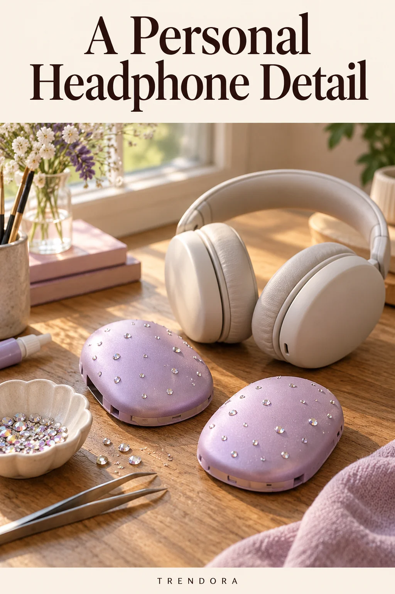
A Personal Headphone Detail. Add rhinestones to compatible removable headphone covers with light patterns and clear space around vents, controls, hinges and ports. Read the full original guide on Folvella.
Style a Barn Jacket. Style a barn jacket with jeans, a midi skirt, trousers, a knit dress or leggings using five practical fall combinations and balanced layers. Read the full original guide on Folvella.
Easy Fall Outfit Ideas. Style a barn jacket with jeans, a midi skirt, trousers, a knit dress or leggings using five practical fall combinations and balanced layers. Read the full original guide on Folvella.
One Jacket Five Looks. Style a barn jacket with jeans, a midi skirt, trousers, a knit dress or leggings using five practical fall combinations and balanced layers. Read the full original guide on Folvella.
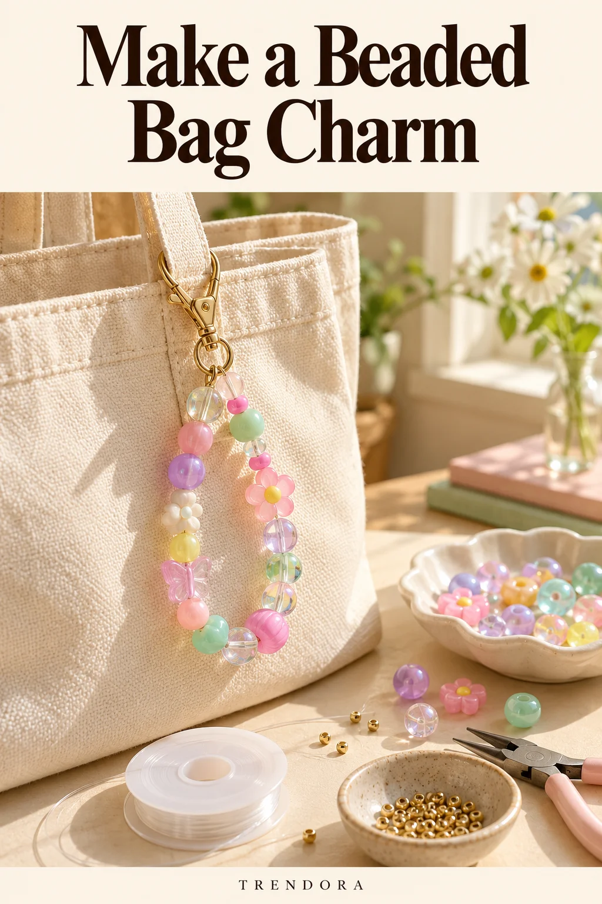
Make a Beaded Bag Charm. Build a lightweight beaded bag charm loop using compatible wire, crimps and a clasp, with color ideas and step-by-step assembly advice. Read the full original guide on Folvella.
Beads for Your Everyday Bag. Build a lightweight beaded bag charm loop using compatible wire, crimps and a clasp, with color ideas and step-by-step assembly advice. Read the full original guide on Folvella.
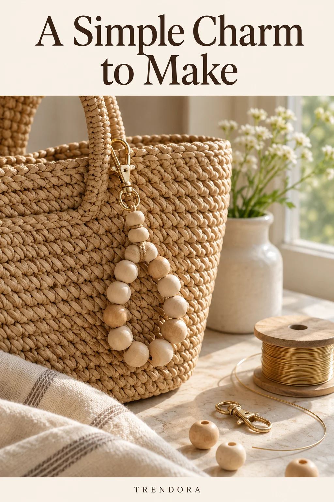
A Simple Charm to Make. Build a lightweight beaded bag charm loop using compatible wire, crimps and a clasp, with color ideas and step-by-step assembly advice. Read the full original guide on Folvella.
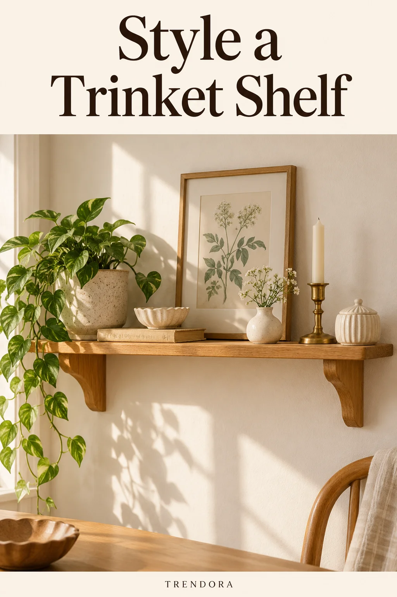
Style a Trinket Shelf. Arrange small collections on a trinket shelf with loose groups, simple risers, breathing room and an easy routine for cleaning and rotating. Read the full original guide on Folvella.
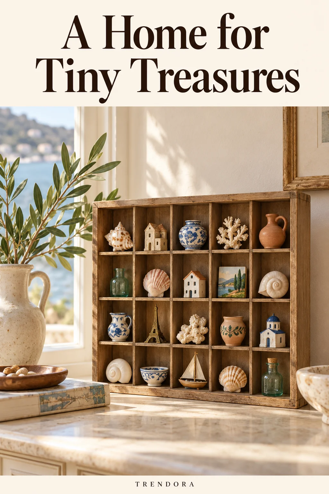
A Home for Tiny Treasures. Arrange small collections on a trinket shelf with loose groups, simple risers, breathing room and an easy routine for cleaning and rotating. Read the full original guide on Folvella.
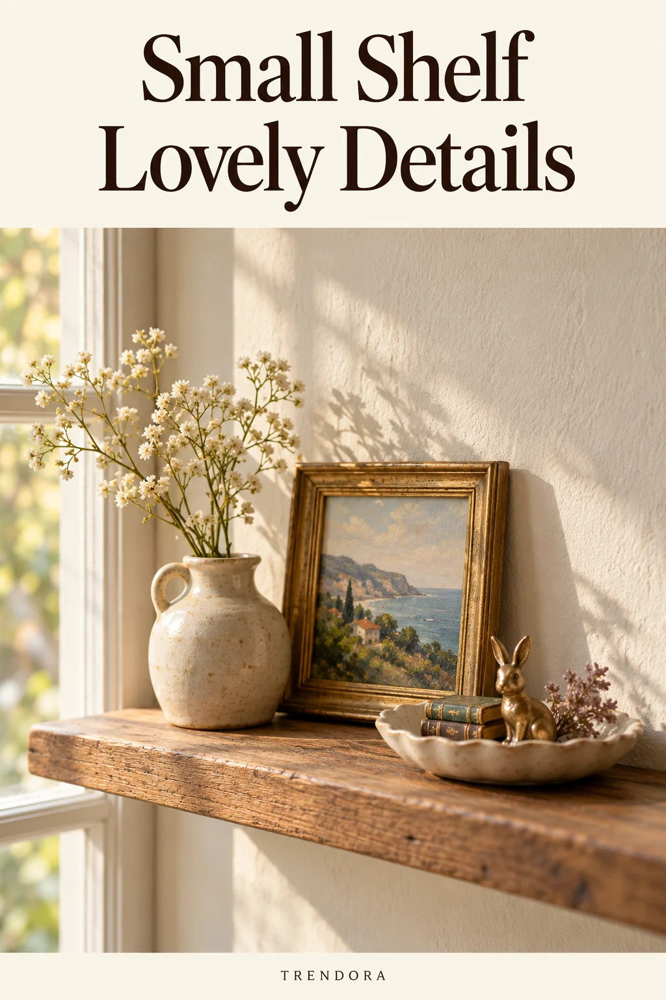
Small Shelf Lovely Details. Arrange small collections on a trinket shelf with loose groups, simple risers, breathing room and an easy routine for cleaning and rotating. Read the full original guide on Folvella.
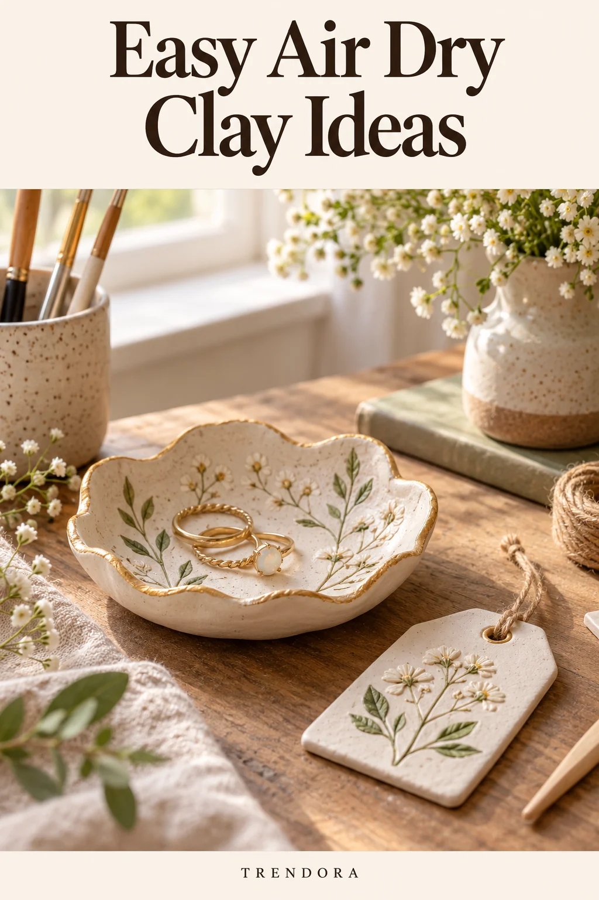
Easy Air Dry Clay Ideas. Try six decorative air-dry clay projects, from a ring dish to a photo stand, with shaping, drying and finishing tips for your first batch. Read the full original guide on Folvella.
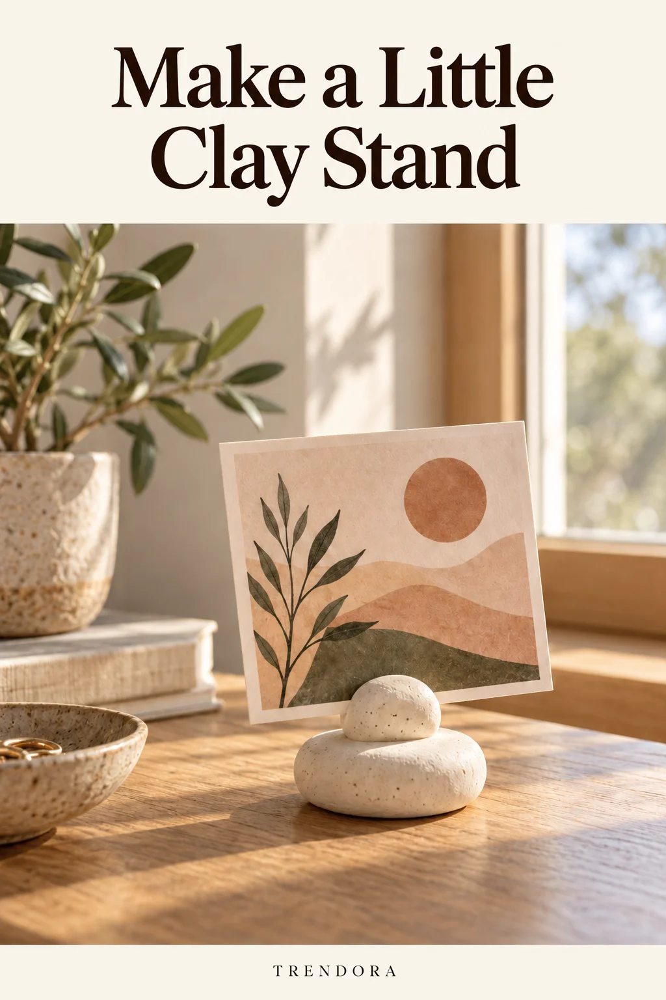
Make a Little Clay Stand. Try six decorative air-dry clay projects, from a ring dish to a photo stand, with shaping, drying and finishing tips for your first batch. Read the full original guide on Folvella.
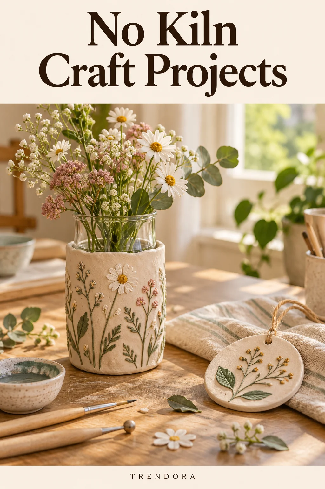
No Kiln Craft Projects. Try six decorative air-dry clay projects, from a ring dish to a photo stand, with shaping, drying and finishing tips for your first batch. Read the full original guide on Folvella.
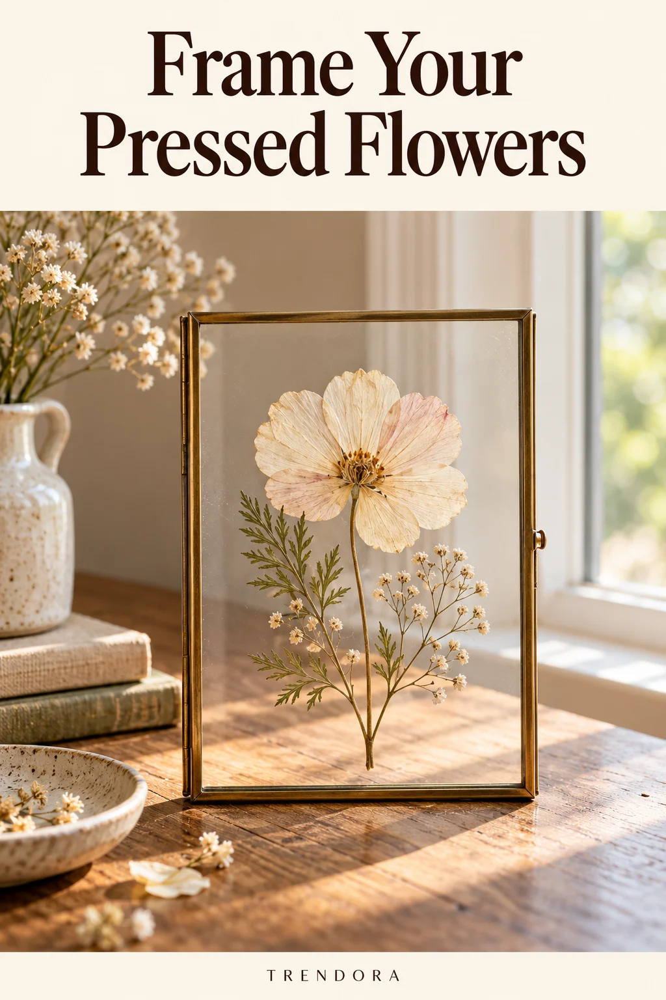
Frame Your Pressed Flowers. Press thin flowers and leaves, check that they are dry and arrange a botanical frame with simple guidance on pressing, layout and display. Read the full original guide on Folvella.
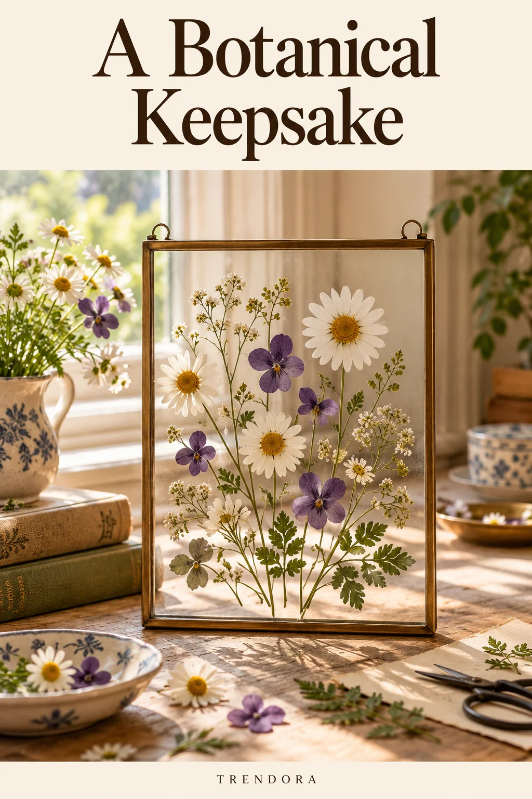
A Botanical Keepsake. Press thin flowers and leaves, check that they are dry and arrange a botanical frame with simple guidance on pressing, layout and display. Read the full original guide on Folvella.
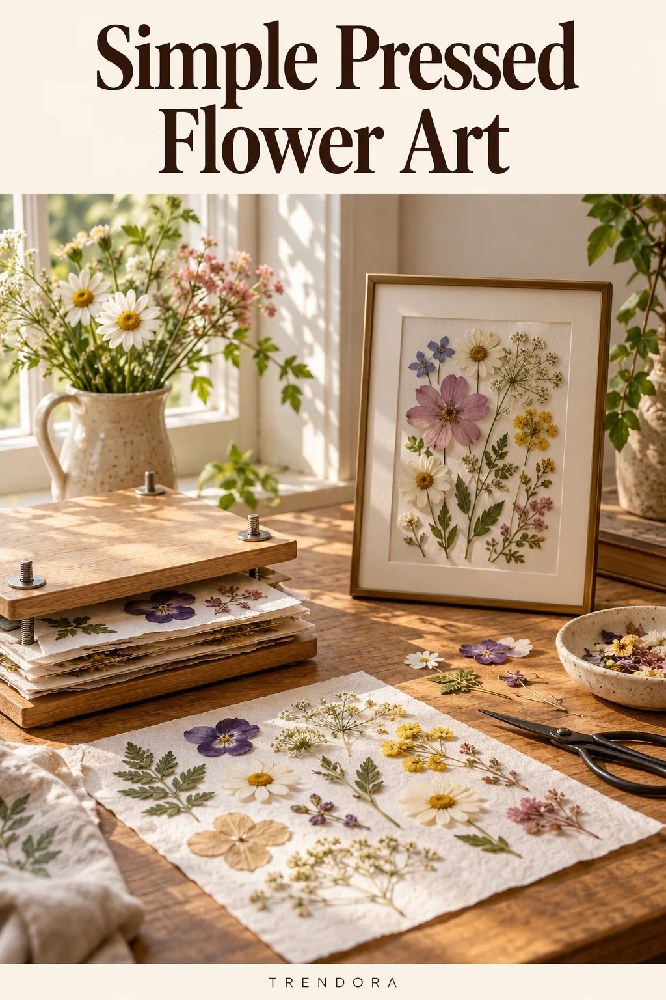
Simple Pressed Flower Art. Press thin flowers and leaves, check that they are dry and arrange a botanical frame with simple guidance on pressing, layout and display. Read the full original guide on Folvella.
Make Marshmallow Cold Foam. Make marshmallow cold foam for iced coffee with a small dairy batch, frothing tips, three flavor variations and easy texture adjustments. Read the full original guide on Folvella.
A Soft Sweet Coffee Top. Make marshmallow cold foam for iced coffee with a small dairy batch, frothing tips, three flavor variations and easy texture adjustments. Read the full original guide on Folvella.
Try This Iced Coffee Topping. Make marshmallow cold foam for iced coffee with a small dairy batch, frothing tips, three flavor variations and easy texture adjustments. Read the full original guide on Folvella.
Cookies and Cream Latte. Make an iced cookies and cream latte with cocoa, vanilla, coffee and milk, then finish with fine cookie crumbs and an optional cream topping. Read the full original guide on Folvella.
A Cookie Inspired Coffee. Make an iced cookies and cream latte with cocoa, vanilla, coffee and milk, then finish with fine cookie crumbs and an optional cream topping. Read the full original guide on Folvella.
Make an Iced Cookie Latte. Make an iced cookies and cream latte with cocoa, vanilla, coffee and milk, then finish with fine cookie crumbs and an optional cream topping. Read the full original guide on Folvella.
Make a Carrot Cake Latte. Make a carrot cake-inspired latte with cinnamon, ginger, nutmeg and vanilla, plus hot, iced and decaf options for a cozy coffee break. Read the full original guide on Folvella.
Warm Spiced Coffee at Home. Make a carrot cake-inspired latte with cinnamon, ginger, nutmeg and vanilla, plus hot, iced and decaf options for a cozy coffee break. Read the full original guide on Folvella.
A Cozy Cake Inspired Latte. Make a carrot cake-inspired latte with cinnamon, ginger, nutmeg and vanilla, plus hot, iced and decaf options for a cozy coffee break. Read the full original guide on Folvella.
Try Mango Iced Coffee. Make a small mango syrup batch for an iced latte or cold brew, with straining steps, balanced proportions and tips for a smoother drink. Read the full original guide on Folvella.
A Fruity Cold Brew. Make a small mango syrup batch for an iced latte or cold brew, with straining steps, balanced proportions and tips for a smoother drink. Read the full original guide on Folvella.
Make Mango Coffee at Home. Make a small mango syrup batch for an iced latte or cold brew, with straining steps, balanced proportions and tips for a smoother drink. Read the full original guide on Folvella.